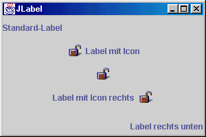
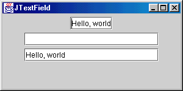
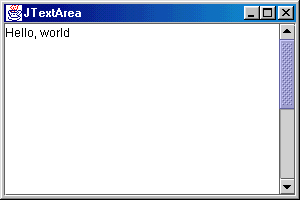
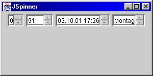

38.1 Label und Textfelder
38.1.1 JLabel
Ein JLabel
ist ein Dialogelement zur Anzeige einer Beschriftung innerhalb eines
GUI-Containers. Es besitzt einen Text und ein Icon, die in beliebiger
Anordnung dargestellt werden können. Beide Elemente sind optional,
ein JLabel
kann also auch nur ein Icon enthalten. Auf Benutzereingaben
reagiert ein JLabel
nicht. Seine wichtigsten Konstruktoren sind:
public JLabel(String text)
public JLabel(Icon image)
public JLabel(
String text,
Icon icon,
int horizontalAlignment
)
|
javax.swing.JLabel |
Wird ein Icon
übergeben, steht es links neben dem Text. Wie es erzeugt werden
kann, wurde in Abschnitt 37.2.3
gezeigt. Der Parameter horizontalAlignment
gibt an, wie das Label horizontal platziert werden soll, falls links
und rechts mehr Platz als erforderlich zur Verfügung steht. Hier
kann eine der Konstanten LEFT,
CENTER
oder RIGHT
aus dem Interface SwingConstants
angegeben werden.
Auf die relative Anordnung von Text und Icon kann mit den Methoden
setHorizontalTextPosition
und getHorizontalTextPosition
zugegriffen werden (standardmäßig steht der Text rechts
neben dem Icon). Mögliche Werte sind LEFT
und RIGHT.
:
public void setHorizontalTextPosition(
int textPosition
)
public int getHorizontalTextPosition()
|
javax.swing.JLabel |
JLabel
stellt noch einige Methoden zur Verfügung, mit denen die Anordnung
seines Inhalts beeinflusst werden kann:
public void setHorizontalAlignment(int alignment)
public int getHorizontalAlignment()
public void setVerticalAlignment(int alignment)
public int getVerticalAlignment()
|
javax.swing.JLabel |
Mit setHorizontalAlignment
wird die horizontale Ausrichtung festgelegt, mögliche Parameter
sind LEFT,
CENTER
oder RIGHT.
Mit setVerticalAlignment
wird die vertikale Ausrichtung festgelegt, hier kann eine der Konstanten
TOP,
CENTER
oder BOTTOM
aus dem Interface SwingConstants
übergeben werden. Mit getHorizontalAlignment
und getVerticalAlignment
können beide Einstellungen auch abgefragt werden.
Das folgende Programm erzeugt einige Labels mit unterschiedlichen
Eigenschaften:
001 /* Listing3801.java */
002
003 import java.awt.*;
004 import javax.swing.*;
005
006 public class Listing3801
007 extends JFrame
008 {
009 public Listing3801()
010 {
011 super("JLabel");
012 addWindowListener(new WindowClosingAdapter(true));
013 Container cp = getContentPane();
014 cp.setLayout(new GridLayout(5, 1));
015 JLabel label;
016 //Standardlabel
017 label = new JLabel("Standard-Label");
018 cp.add(label);
019 //Label mit Icon
020 label = new JLabel(
021 "Label mit Icon",
022 new ImageIcon("lock.gif"),
023 JLabel.CENTER
024 );
025 cp.add(label);
026 //Nur-Icon
027 label = new JLabel(new ImageIcon("lock.gif"));
028 cp.add(label);
029 //Icon auf der rechten Seite
030 label = new JLabel(
031 "Label mit Icon rechts",
032 new ImageIcon("lock.gif"),
033 JLabel.CENTER
034 );
035 label.setHorizontalTextPosition(JLabel.LEFT);
036 cp.add(label);
037 //Label rechts unten
038 label = new JLabel("Label rechts unten");
039 label.setHorizontalAlignment(JLabel.RIGHT);
040 label.setVerticalAlignment(JLabel.BOTTOM);
041 cp.add(label);
042 }
043
044 public static void main(String[] args)
045 {
046 Listing3801 frame = new Listing3801();
047 frame.setLocation(100, 100);
048 frame.setSize(300, 200);
049 frame.setVisible(true);
050 }
051 }
|
Listing3801.java |
Listing 38.1: Die Klasse JLabel
Die Ausgabe des Programms ist:

Abbildung 38.1: Die Klasse JLabel
38.1.2 JTextField
Die Klasse JTextField
ist das Swing-Pendant zur AWT-Klasse TextField
(siehe Abschnitt 32.7) und stellt
ein einzeiliges Textfeld zur Eingabe von Daten dar. In ihren grundlegenden
Möglichkeiten ist die Programmierschnittstelle beider Klassen
ähnlich, JTextField
bietet aber zusätzliche Möglichkeiten, die in TextField
nicht zu finden sind. Ein Großteil der Fähigkeiten von
JTextField
ist in der Basisklasse JTextComponent
des Pakets javax.swing.text
implementiert.
Die wichtigsten Konstruktoren von JTextField
sind:
public JTextField(int columns)
public JTextField(String text)
public JTextField(String text, int columns)
|
javax.swing.JTextField |
Der erste von ihnen erzeugt ein leeres Textfeld mit der angegebenen
Anzahl Spalten, der zweite ein Textfeld mit dem angegebenen Text.
Beim dritten Konstruktor können sowohl Spaltenzahl als auch Text
vorgegeben werden. Die Spaltenzahl wird zur Berechnung der Breite
des Textfelds verwendet (Anzahl Spalten mal Breite eines »m«),
sie dient nicht dazu, die Anzahl der Eingabezeichen zu begrenzen.
Ist die Spaltenzahl 0 wie im zweiten Konstruktor, wird die initiale
Textlänge zur Berechnung der Spaltenbreite verwendet.
JTextField
bietet ähnliche Methoden wie TextField:
public String getText()
public void setText(String t)
public String getText(int offs, int len)
public String getSelectedText()
public int getSelectionStart()
public int getSelectionEnd()
public void setSelectionStart(int selectionStart)
public void setSelectionEnd(int selectionEnd)
public int getCaretPosition()
public void setCaretPosition(int pos)
public void moveCaretPosition(int pos)
|
javax.swing.JTextField |
Mit den parameterlosen Versionen von getText
und setText
kann auf den kompletten Inhalt des Textfelds zugegriffen werden. Die
parametrisierte Variante von getText
liefert den Textausschnitt der angegebenen Länge und Position.
getSelectedText
liefert dagegen den selektierten Text (bzw. null,
wenn kein Text selektiert ist) und mit getSelectionStart
und getSelectionEnd
können Anfang und Ende des selektierten Bereichs ermittelt werden.
Mit setSelectionStart
und setSelectionEnd
kann dieser sogar verändert werden. getCaretPosition
liefert die Position der Eingabemarke und mit setCaretPosition
kann sie verändert werden. moveCaretPosition
verändert die Position der Einfügemarke und markiert dabei
den Bereich zwischen alter und neuer Position. Für alle Positionsangaben
gilt, dass der Platz vor dem ersten Zeichen die Position 0 und der
nach dem letzten Textzeichen die Position Länge des Textes
hat.
Die wichtigsten registrierbaren Listener sind ActionListener
und CaretListener:
public void addActionListener(ActionListener l)
public void addCaretListener(CaretListener listener)
|
javax.swing.JTextField |
Ein ActionListener
wird immer dann aufgerufen, wenn im Eingabefeld [ENTER]
gedrückt wird, ein CaretListener,
wenn sich die Position der Einfügemarke geändert hat.
Das folgende Beispiel zeigt ein Programm mit drei Textfeldern. Auf
dem untersten sind ein ActionListener
und ein CaretListener
registriert, die bei jedem Aufruf einige Parameter auf der Konsole
ausgeben:
001 /* Listing3802.java */
002
003 import java.awt.*;
004 import java.awt.event.*;
005 import javax.swing.*;
006 import javax.swing.event.*;
007
008 public class Listing3802
009 extends JFrame
010 implements ActionListener, CaretListener
011 {
012 public Listing3802()
013 {
014 super("JTextField");
015 addWindowListener(new WindowClosingAdapter(true));
016 Container cp = getContentPane();
017 cp.setLayout(new FlowLayout());
018 JTextField tf;
019 //Linksbündiges Textfeld mit "Hello, world"
020 tf = new JTextField("Hello, world");
021 cp.add(tf);
022 //Leeres Textfeld mit 20 Spalten
023 tf = new JTextField(20);
024 cp.add(tf);
025 //Textfeld mit "Hello, world" und 20 Spalten
026 tf = new JTextField("Hello, world", 20);
027 tf.addActionListener(this);
028 tf.addCaretListener(this);
029 cp.add(tf);
030 }
031
032 public void actionPerformed(ActionEvent event)
033 {
034 JTextField tf = (JTextField)event.getSource();
035 System.out.println("---ActionEvent---");
036 System.out.println(tf.getText());
037 System.out.println(tf.getSelectedText());
038 System.out.println(tf.getSelectionStart());
039 System.out.println(tf.getSelectionEnd());
040 System.out.println(tf.getCaretPosition());
041 }
042
043 public void caretUpdate(CaretEvent event)
044 {
045 System.out.println("---CaretEvent---");
046 System.out.println(event.getDot());
047 System.out.println(event.getMark());
048 }
049
050 public static void main(String[] args)
051 {
052 Listing3802 frame = new Listing3802();
053 frame.setLocation(100, 100);
054 frame.setSize(300, 150);
055 frame.setVisible(true);
056 }
057 }
|
Listing3802.java |
Listing 38.2: Die Klasse JTextField
Die Ausgabe des Programms ist:

Abbildung 38.2: Die Klasse JTextField
38.1.3 JFormattedTextField
Neben JTextField
gibt es eine abgeleitete Klasse JFormattedTextField
zum Erfassen formatierter Strings. Sie kann dazu verwendet
werden, Zahlen, Datumswerte oder andere formatierte Strings einzugeben,
sie während der Eingabe zu validieren und später korrekt
formatiert anzuzeigen. Eine interessante Eigenschaft dieser Klasse
ist, dass sich einstellen lässt, wie sie auf einen Fokusverlust
(also das Verlassen des Textfelds durch den Anwender) reagieren soll.
Es ist beispielsweise möglich, korrekte Eingaben automatisch
zu akzeptieren, bei fehlerhaften aber auf den alten Wert zurückzugehen.
So lassen sich mit relativ wenig Aufwand einfache Validierungsmechanismen
für Textfelder erzeugen.
38.1.4 JPasswordField
JPasswordField
ist eine Spezialisierung von JTextField
zur Eingabe von Passwörtern. Der Hauptunterschied zu JTextField
besteht darin, dass der eingegebene Text nicht angezeigt, sondern
stattdessen für jedes Zeichen ein Sternchen ausgegeben wird.
Durch Aufruf von setEchoChar
kann auch ein anderes Ausgabezeichen ausgewählt werden. Des Weiteren
sind die beiden Zwischenablagefunktionen Kopieren und Ausschneiden
deaktiviert, um zu verhindern, dass der Text aus einem Passwortfeld
in ein anderes Feld kopiert oder an ein anderes Programm übergeben
werden kann.
38.1.5 JTextArea
JTextArea
ist eine Komponente zur Anzeige und Eingabe von mehrzeiligen Texten.
Wie die AWT-Klasse TextArea
dient sie dazu, unformatierte Texte zu bearbeiten. Diese können
zwar Zeilenumbrüche und Tabulatoren, nicht aber unterschiedliche
Schriften, Farben oder grafische Elemente enthalten (für diesen
Zweck gibt es die Klassen JEditorPane
und JTextPane,
die hier nicht behandelt werden sollen). Die wichtigsten Konstruktoren
von JTextArea
sind:
public JTextArea(String text)
public JTextArea(int rows, int columns)
public JTextArea(String text, int rows, int columns)
|
javax.swing.JTextArea |
Sie entsprechen im Prinzip denen von JTextField,
zusätzlich kann jedoch die Anzahl der Zeilen angegeben werden.
Neben den in Abschnitt 38.1.2
vorgestellten Methoden der Klasse JTextField
stehen zusätzliche Methoden zum zeilenweisen Zugriff auf den
dargestellten Text zur Verfügung:
public int getLineCount()
public int getLineStartOffset(int line)
public int getLineEndOffset(int line)
public int getLineOfOffset(int offset)
|
javax.swing.JTextArea |
getLineCount
liefert die Gesamtzahl der Zeilen. Mit getLineStartOffset
und getLineEndOffset
kann zu einer beliebigen Zeile ihr Anfangs- und Endeoffset bestimmt
werden. Mit diesen Informationen kann beispielsweise getText
aufgerufen werden, um den Inhalt einer bestimmten Zeile zu lesen.
Die Methode getLineOfOffset
dient dazu, die Nummer einer Zeile zu ermitteln, wenn der Offset eines
darin enthaltenen Zeichens bekannt ist.
JTextArea
stellt einige Methoden zur Verfügung, mit denen die Formatierung
des Textes beeinflusst werden kann:
public void setTabSize(int size)
public int getTabSize()
public void setLineWrap(boolean wrap)
public boolean getLineWrap()
public void setWrapStyleWord(boolean word)
public boolean getWrapStyleWord()
|
javax.swing.JTextArea |
Mit setTabSize
und getTabSize
kann auf die Tabulatorweite zugegriffen werden. Sie hat standardmäßig
den Wert 8 (zur Umrechnung in Bildschirmpixel wird er mit der Breite
des breitesten Buchstabens im aktuellen Font multipliziert). Mit setLineWrap
kann festgelegt werden, ob zu breite Spalten automatisch umbrochen
werden sollen. setWrapStyleWord
definiert, ob dies an Wortgrenzen oder mitten im Wort geschehen soll.
Mit getLineWrap
und getWrapStyleWord
können die beiden Eigenschaften auch abgefragt werden.
Das folgende Programm enthält eine JTextArea
mit 30 Spalten und 20 Zeilen. Ihre Tabulatorweite wurde auf 4 reduziert,
zu lange Zeilen werden automatisch an Wortgrenzen umbrochen. Die JTextArea
wurde in eine JScrollPane
eingebettet und erhält - wenn nötig - automatisch einen
vertikalen Schieber. Ein horizontaler Schieber wird nicht verwendet,
da die Zeilen wegen des automatischen Umbruchs nicht zu lang werden
können.
001 /* Listing3803.java */
002
003 import java.awt.*;
004 import javax.swing.*;
005
006 public class Listing3803
007 extends JFrame
008 {
009 public Listing3803()
010 {
011 super("JTextArea");
012 addWindowListener(new WindowClosingAdapter(true));
013 Container cp = getContentPane();
014 JTextArea ta = new JTextArea("Hello, world", 20, 30);
015 ta.setTabSize(4);
016 ta.setLineWrap(true);
017 ta.setWrapStyleWord(true);
018 cp.add(new JScrollPane(ta));
019 }
020
021 public static void main(String[] args)
022 {
023 Listing3803 frame = new Listing3803();
024 frame.setLocation(100, 100);
025 frame.setSize(300, 200);
026 frame.setVisible(true);
027 }
028 }
|
Listing3803.java |
Listing 38.3: Die Klasse JTextArea
Die Ausgabe des Programms ist:

Abbildung 38.3: Die Klasse JTextArea
38.1.6 JSpinner
Seit dem JDK 1.4 gibt es die Klasse JSpinner,
mit der Textfelder erzeugt werden können, deren Inhalt einer
vordefinierten, geordneten Liste von Werten entstammt. Diese Werte
können vom Anwender nicht nur manuell eingegeben werden, sondern
auch auf- oder absteigend durchlaufen werden. Dazu besitzt der JSpinner
zwei kleine Buttons, mit denen die Wertefolge abgerufen werden kann.
Alternativ können meist auch die Tasten [CURSORHOCH]
oder [CURSORRUNTER] verwendet
werden, wenn der JSpinner
den Fokus hat.
Konzeptionell kann ein Spinner als Mischung aus Textfeldern und den
in Abschnitt 38.3 vorgestellten
Listen oder Comboboxen angesehen werden. Im Gegensatz zu Listen und
Comboboxen muss der Wertevorrat eines Spinners allerdings nicht notwendigerweise
endlich sein. Soll beispielsweise ein Datum eingegeben werden,
kann es sinnvoll sein, den Wertebereich nach unten oder oben offen
zu lassen, um beliebige Datumswerte eingeben zu können. Gegenüber
einer Combobox hat ein Spinner zudem den Vorteil, dass er bei der
Darstellung auf dem Bildschirm keine darunterliegenden Dialogelemente
verdecken kann. Nachteilig ist allerdings, dass es keine Möglichkeit
der Vorschau auf die Menge der insgesamt verfügbaren Elemente
gibt.
Die Klasse JSpinner
besitzt zwei Konstruktoren:
Der erste erzeugt einen JSpinner
für Ganzzahlen, die in Einerschritten beliebig weit in jede Richtung
durchlaufen werden können. Der zweite Konstruktor erwartet ein
SpinnerModel,
mit dem der Typ der darzustellenden Daten festgelegt wird. SpinnerModel
ist ein Interface im Paket javax.swing,
das die Wertemenge eines Spinners über dessen aktuelles Element
sowie den jeweiligen Vorgänger und Nachfolger dieses Elements
definiert. Zu diesem Interface gibt es eine abstrakte Implementierung
AbstractSpinnerModel
und drei Konkretisierungen SpinnerDateModel,
SpinnerNumberModel
und SpinnerListModel.
Sie repräsentieren Folgen von Datumswerten, Ganz- oder Fließkommazahlen
oder fest vorgegebene Listen von Strings.
Um einen JSpinner
zu erzeugen, wird das gewünschte Modell instanziert und an den
Konstruktor der Klasse übergeben. Das folgende Beispiel zeigt
ein einfaches Fenster mit vier Spinnern. Der erste Spinner repräsentiert
eine nach oben und unten offene Liste von Ganzzahlen der Schrittweite
1. Beim zweiten ist ihr Wertebereich begrenzt und die Folge hat die
Schrittweite 7. Der dritte Spinner erlaubt die Auswahl von Datumswerten
und der vierte die von Wochentagen.
001 /* Listing3804.java */
002
003 import java.awt.*;
004 import java.awt.event.*;
005 import javax.swing.*;
006 import javax.swing.event.*;
007
008 public class Listing3804
009 extends JFrame
010 {
011 private static final String[] WDAYS = {
012 "Montag", "Dienstag", "Mittwoch", "Donnerstag",
013 "Freitag", "Samstag", "Sonntag"
014 };
015
016 public Listing3804()
017 {
018 super("JSpinner");
019 addWindowListener(new WindowClosingAdapter(true));
020 Container cp = getContentPane();
021 cp.setLayout(new FlowLayout());
022 //Default-Spinner für Ganzzahlen
023 JSpinner spinner = new JSpinner();
024 cp.add(spinner);
025 //Spinner für einige Vielfache von 7
026 spinner = new JSpinner(new SpinnerNumberModel(91, 49, 126, 7));
027 cp.add(spinner);
028 //Spinner für Datum/Uhrzeit
029 spinner = new JSpinner(new SpinnerDateModel());
030 cp.add(spinner);
031 //Spinner für Wochentage
032 spinner = new JSpinner(new SpinnerListModel(WDAYS));
033 cp.add(spinner);
034 }
035
036 public static void main(String[] args)
037 {
038 Listing3804 frame = new Listing3804();
039 frame.setLocation(100, 100);
040 frame.setSize(300, 150);
041 frame.setVisible(true);
042 }
043 }
|
Listing3804.java |
Listing 38.4: Die Klasse JSpinner
Die Ausgabe des Programms ist:

Abbildung 38.4: Die Klasse JSpinner